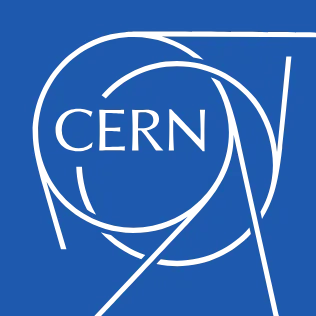
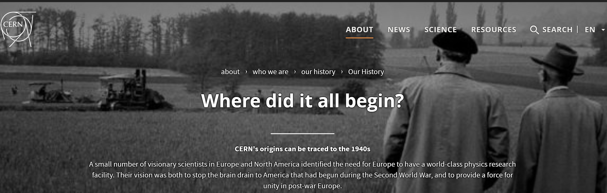

WorldWideWeb(W3) 프로젝트는 전 세계에 흩어져 있는 방대한 문서들을 누구나 보편적으로 접근할 수 있도록 하기 위해 시작된 광역 하이퍼미디어 정보 검색 이니셔티브이다. 이 프로젝트의 핵심 목적은 다양한 시스템과 위치에 존재하는 정보를 하나의 연결된 네트워크 구조로 통합하여, 사용자가 링크를 통해 문서와 자료를 직접 또는 간접적으로 탐색할 수 있도록 하는 데 있다. 해당 문서는 프로젝트의 개요를 중심 허브로 삼아 요약본, 메일링 리스트, 정책 문서, 최신 뉴스, 자주 묻는 질문 등 모든 관련 자료를 연결하는 구조를 갖고 있다.
또한 W3는 단순한 정보 소개를 넘어, 전 세계 온라인 정보에 대한 포인터 제공(What’s out there), 사용자를 위한 브라우저 도움말(Help), 프로젝트 구성 요소와 소프트웨어 현황(Software Products), 프로토콜 및 포맷 등 기술 세부사항(Technical), 참고 문헌(Bibliography), 참여 인물 목록(People), 프로젝트 역사(History)까지 체계적으로 안내한다. 더 나아가 웹 발전에 기여할 수 있는 방법(How can I help?)과 코드 배포 방식(Getting code)도 제공함으로써, 정보 공유뿐 아니라 참여와 확장을 지향하는 개방형 구조라는 특징을 가진다.
WorldWideWeb(W3) 프로젝트는 전 세계에 분산되어 있는 방대한 문서들에 대해 보편적 접근을 제공하기 위한 광역 hypermedia 정보 검색 이니셔티브이다.
이 문서는 프로젝트의 중심 허브 역할을 하며, 모든 관련 자료는 이 문서에 직·간접적으로 연결되어 있다. 여기에는 Executive summary, Mailing lists, Policy, W3 news, Frequently Asked Questions 가 포함된다.
또한 W3는 전 세계 온라인 정보로 연결되는 안내 체계를 제공한다. What's out there? 에서는 subjects 및 W3 servers 등 온라인 자원으로의 포인터를 제공하며, Help 에서는 사용 중인 브라우저에 대한 안내를 제공한다.
Software Products 에서는 W3 프로젝트 구성 요소와 현재 상태를 정리하고 있으며, 예시로 Line Mode, Viola, NeXTStep, Servers, Tools, Mail robot, Library 등이 있다.
기술적 세부사항은 Technical 에서 다루며, 프로토콜, 포맷, 프로그램 내부 구조 등이 포함된다. 또한 Bibliography 에서는 관련 문헌과 참고 자료를 제공하고, People 에서는 프로젝트 참여 인물 목록을 확인할 수 있으며, History 에서는 프로젝트 발전 과정을 요약한다.
더 나아가 웹을 지원하고자 하는 이들을 위한 How can I help? 안내와, Getting code 및 anoymous FTP 를 통한 코드 배포 정보도 포함되어 있다.